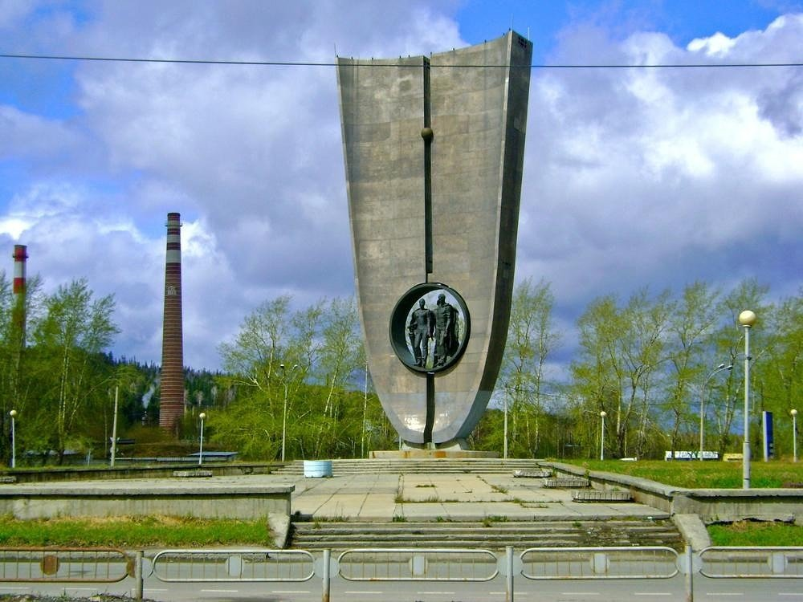
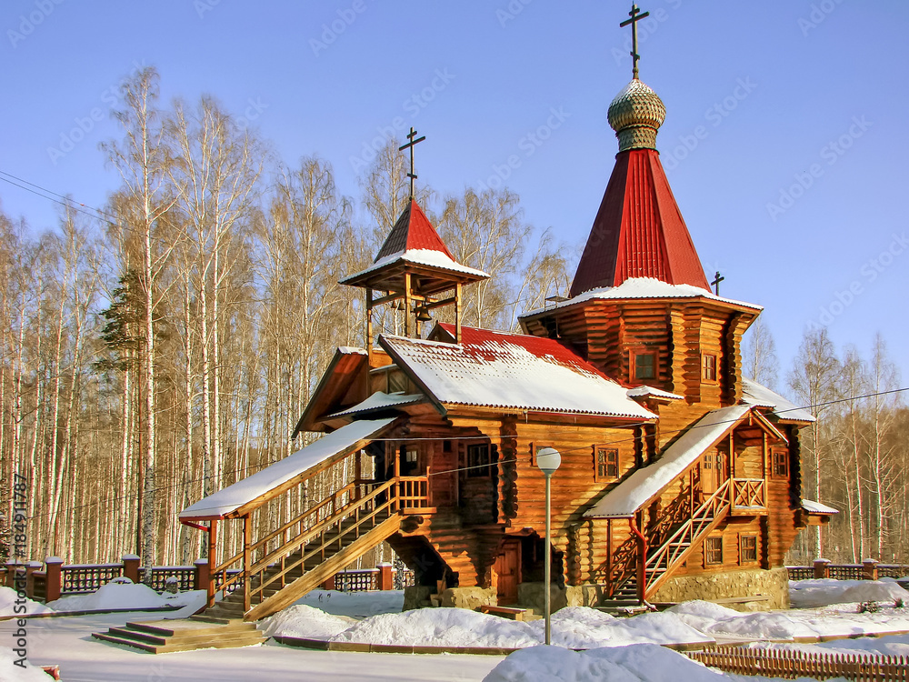
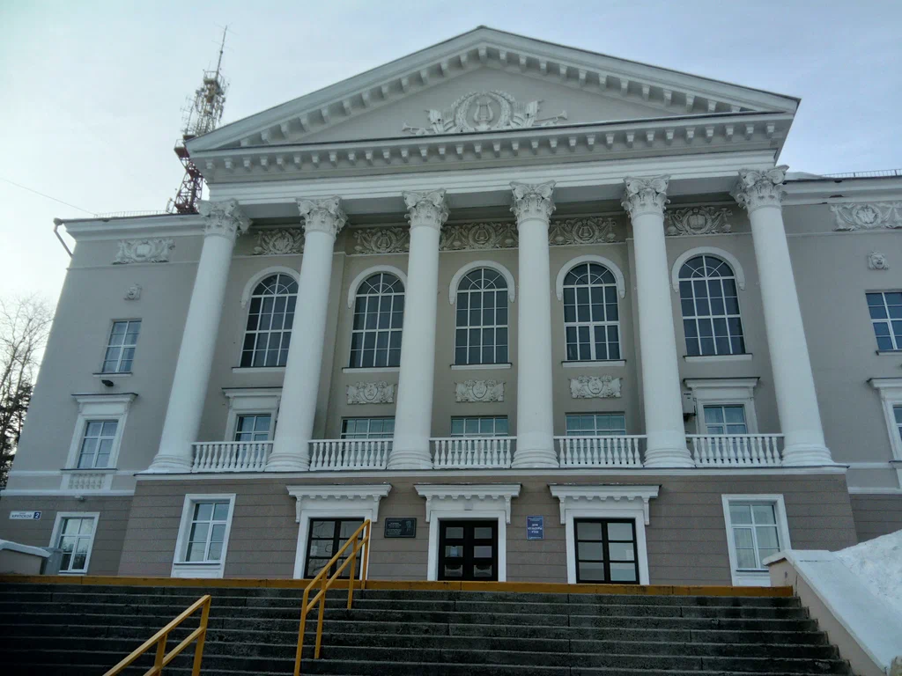
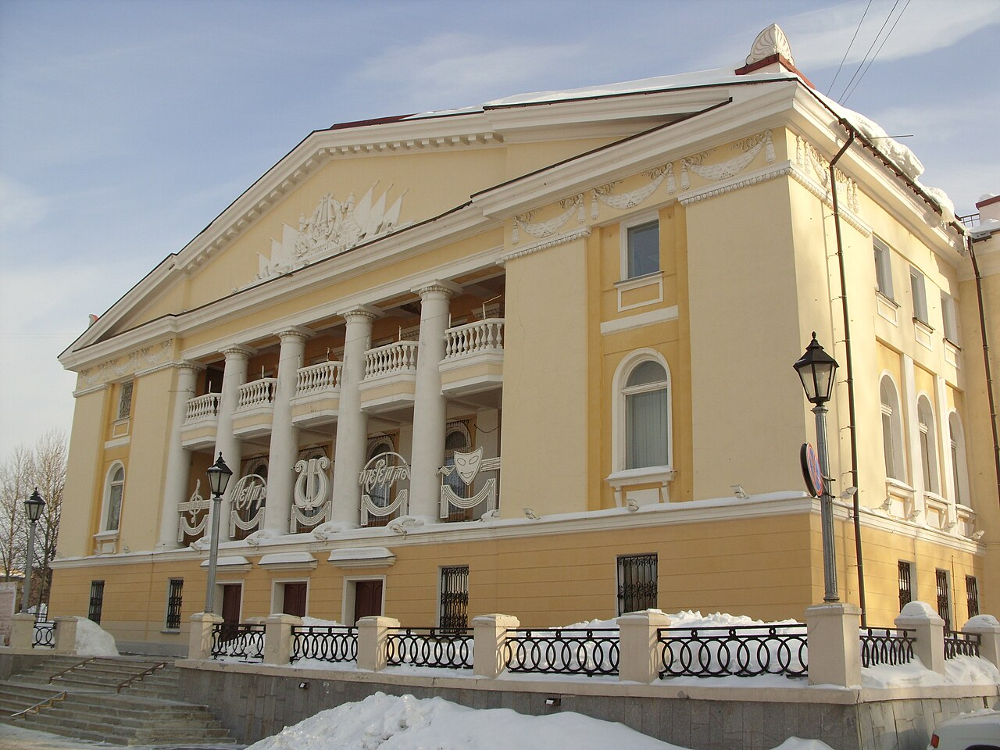
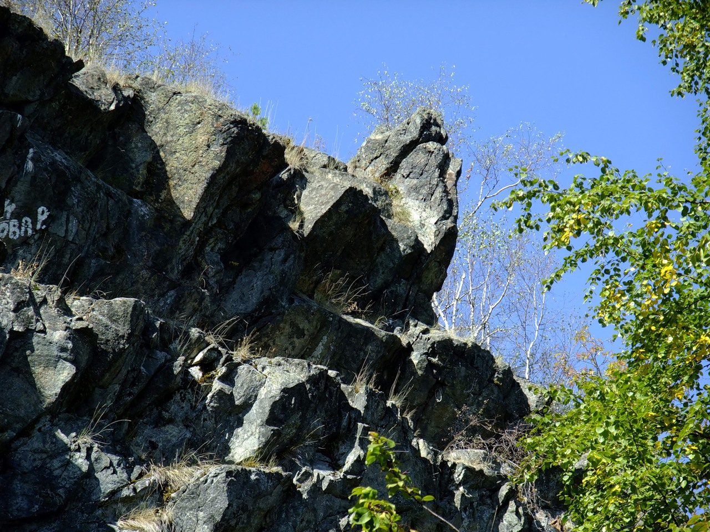

Достопримечательности Новоуральска
Учитывая специфику города, осмотреть эти достопримечательности суждено не всем – многим придется довольствоваться лишь фотографиями. Однако на территории самого города знаковых мест не так уж и много. Одним из наиболее известных мест в черте города является Стелла основателям города, представляющая собой 40-тонную титановую конструкцию высотой более 19 метров.


Она имеет форму латинской буквы U в честь уранового производства, а в ее центре находится памятник основателям Новоуральска. Второй по популярности достопримечательностью является деревянная церковь Серафима Саровского, воздвигнутая в 1995 году по просьбе православных горожан. Построена она была всего лишь за год посреди живописной березовой рощи.
Крупным культурно-досуговым центром Новоуральска является Дом культуры Уральского электрохимического комбината — градообразующего предприятия города. Это учреждение, без сомнения, ассоциируется у всех, кто здесь бывает на праздниках, с торжеством, радостью, красотой, умением удивлять. Ежегодно проводится более 500 мероприятий, которые посещают примерно 150 тысяч человек.


Театр музыки, драмы и комедии один из старейших театров системы ЗАТО, созданный в ноябре 1951 года по инициативе творческой и научной интеллигенции города. Это и крупнейшее учреждение культуры Новоуральского городского округа, коллектив с громким именем, известный зрителям не только родного города, но и всей Свердловской области!
Крупным культурно-досуговым центром Новоуральска является Дом культуры Уральского электрохимического комбината — градообразующего предприятия города. Это учреждение, без сомнения, ассоциируется у всех, кто здесь бывает на праздниках, с торжеством, радостью, красотой, умением удивлять. Ежегодно проводится более 500 мероприятий, которые посещают примерно 150 тысяч человек.
